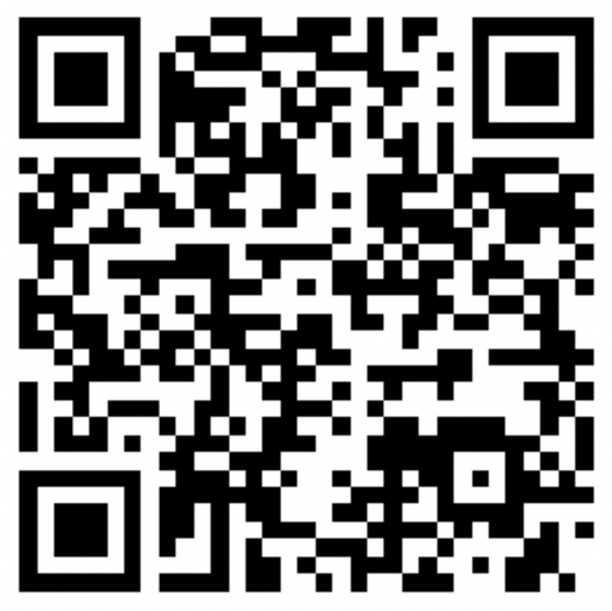

Het perfecte geld van de toekomst (Website geinspireerd door crycker)
Bitcoin (afgekort BTC) is een cryptovaluta en een mondiaal betaalmiddel (als systeem wordt Bitcoin met een hoofdletter geschreven, als munteenheid vaak met een kleine letter). Het is de eerste gedecentraliseerde digitale munt die werkt zonder centrale bank of centrale beheerder. Het netwerk is peer-to-peer en de transacties gebeuren tussen de gebruikers onderling, zonder tussenpersoon. Deze transacties worden geverifieerd via netwerk nodes door het gebruik van cryptografie en worden opgeslagen in een openbare gedistribueerde database, gekend als een blockchain, waar gemiddeld eens in de 10 minuten een blok aan wordt toegevoegd.
Het concept van een blockchain is voor het eerst in 1998 beschreven door Wei Dai op de cypherpunks-mailinglist, en in 2009 geïmplementeerd als opensourcesoftware onder de naam Bitcoin door Satoshi Nakamoto (pseudoniem van een onbekende persoon of groep). Satoshi (afgekort sat) werd later ook de naam van de kleinste rekeneenheid van bitcoin: 1 satoshi = 1/100.000.000 bitcoin (één honderdmiljoenste van één bitcoin) of 0,01 microbitcoin.
Er zijn meerdere websites waar je je Bitcoins kan kopen.
Op Binance.com kan je een account aanmaken.
Wanneer je account goedgekeurd is kan je beginnen met het kopen van je coins!
Je kan Bitcoins sturen door middel van een adres.
BTC to 3C9kasy3PnPeGNXVSj1iKacgGzD1qV6QHy QR code:
 {% endblock %}